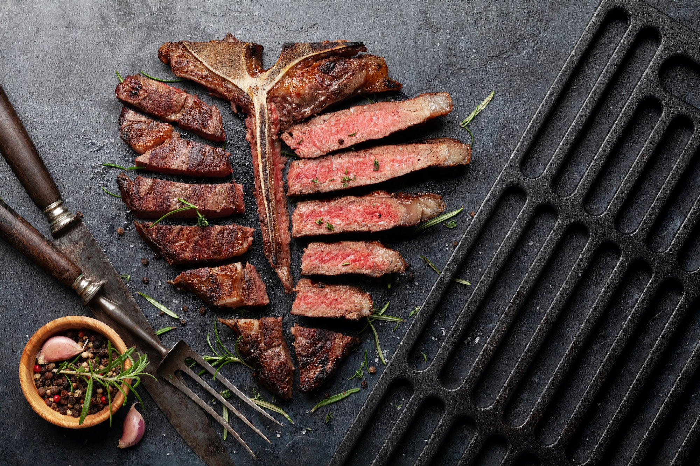
Coup de cœurFaux Filets & Entrecôte Charolais
Notre viande Charolaise sélectionnée avec soin, grillée à la perfection et accompagnée de ses garnitures maison. Un incontournable de la carte, fondant à cœur.
Détendez-vous en famille ou entre amis au bord de notre piscine tout en savourant une cuisine généreuse, maison et méditerranéenne. Une adresse unique au cœur de Melun.
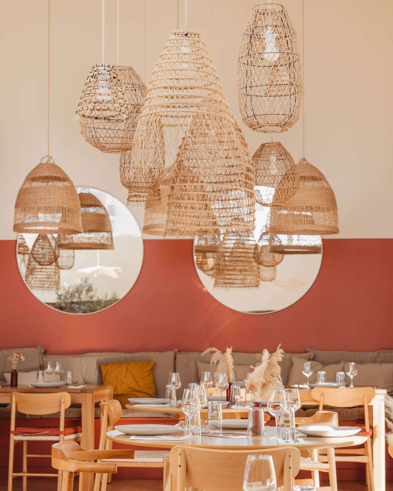
Au bord de la piscine, une atmosphère unique entre détente et gastronomie.
Profitez d'un cadre apaisant et dépaysant inspiré par la Méditerranée. Savourez des plats authentiques, frais et locaux, dans une ambiance conviviale et chaleureuse. Ici, chaque repas devient un moment suspendu, loin de l'agitation quotidienne.
Notre chef et son équipe sélectionnent chaque jour les meilleurs produits locaux et de saison pour composer une carte généreuse, renouvelée régulièrement, qui fait la part belle aux saveurs du terroir et aux influences méditerranéennes.
Découvrez notre carte riche et savoureuse, renouvelée chaque mois, avec des produits frais et locaux sélectionnés avec soin par notre chef.

Coup de cœurNotre viande Charolaise sélectionnée avec soin, grillée à la perfection et accompagnée de ses garnitures maison. Un incontournable de la carte, fondant à cœur.
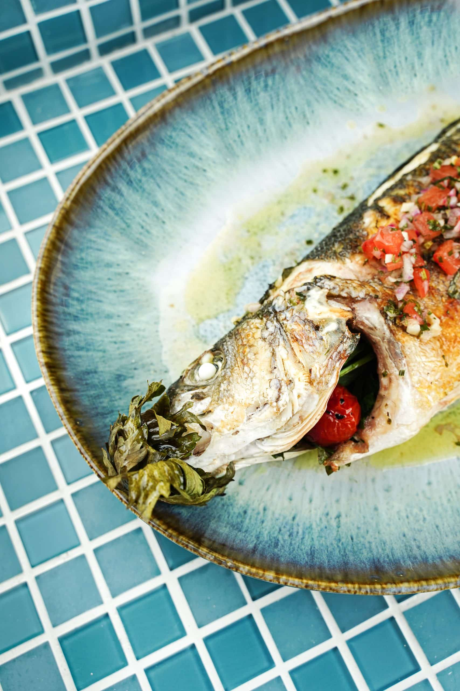
Frais du jourUn tartare de crevettes fraîches, relevé d'une vinaigrette citronnée aux herbes, pour une entrée légère et parfumée aux saveurs marines.
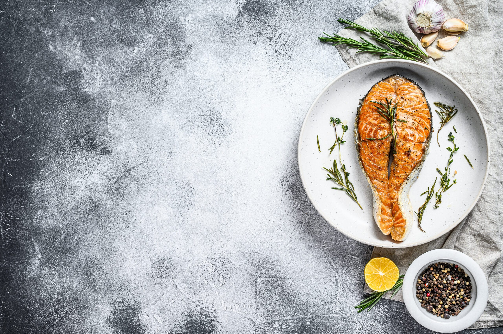
MéditerranéenFilet de saumon atlantique grillé, servi avec un risotto crémeux aux légumes de saison et une sauce vierge aux herbes fraîches.
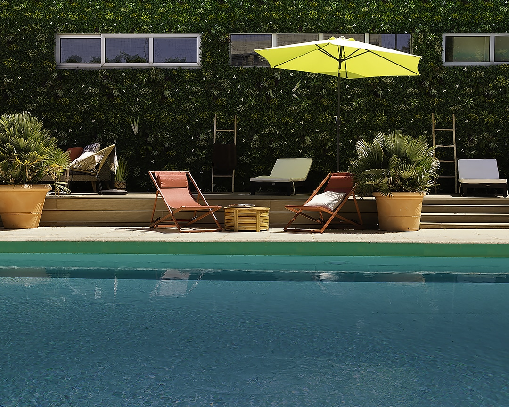
ExclusivitéNotre revisitation raffinée du croque-monsieur classique, sublimé par des copeaux de truffe noire et une béchamel maison à la truffe.
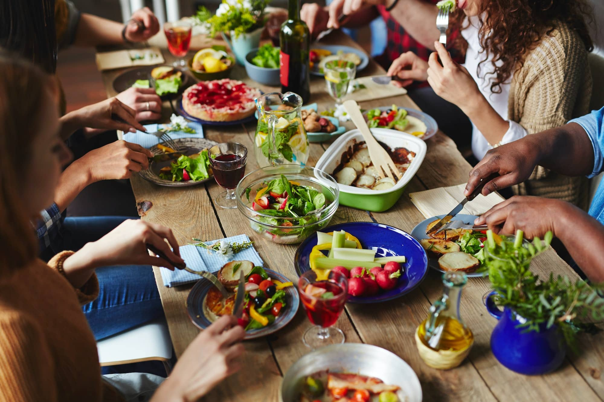
Un velouté doux et onctueux de courge butternut, agrémenté d'un filet de crème fraîche et de graines toastées. Réconfort assuré.
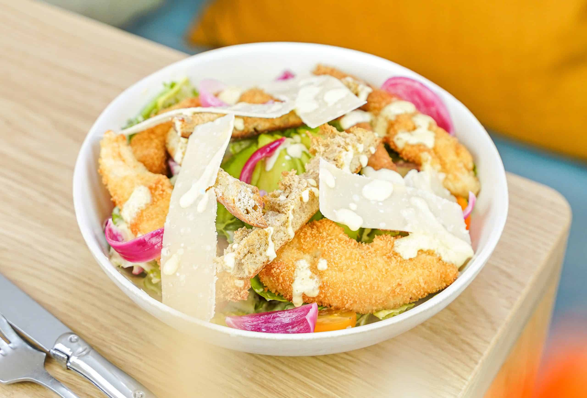
Romaine fraîche, parmesan affiné, croûtons dorés et notre sauce César maison pour une salade généreuse et savoureuse.
Organisez vos événements privés ou professionnels dans un cadre d'exception. La privatisation totale de notre restaurant, terrasse ou rooftop est disponible pour vos moments inoubliables. Notre équipe dédiée vous accompagne de la conception à la réalisation pour garantir la réussite de votre instant.
Privatisez votre espace dès aujourd'huiUn aperçu de notre cadre, de nos plats et de l'ambiance chaleureuse qui vous attend à La Piscine.
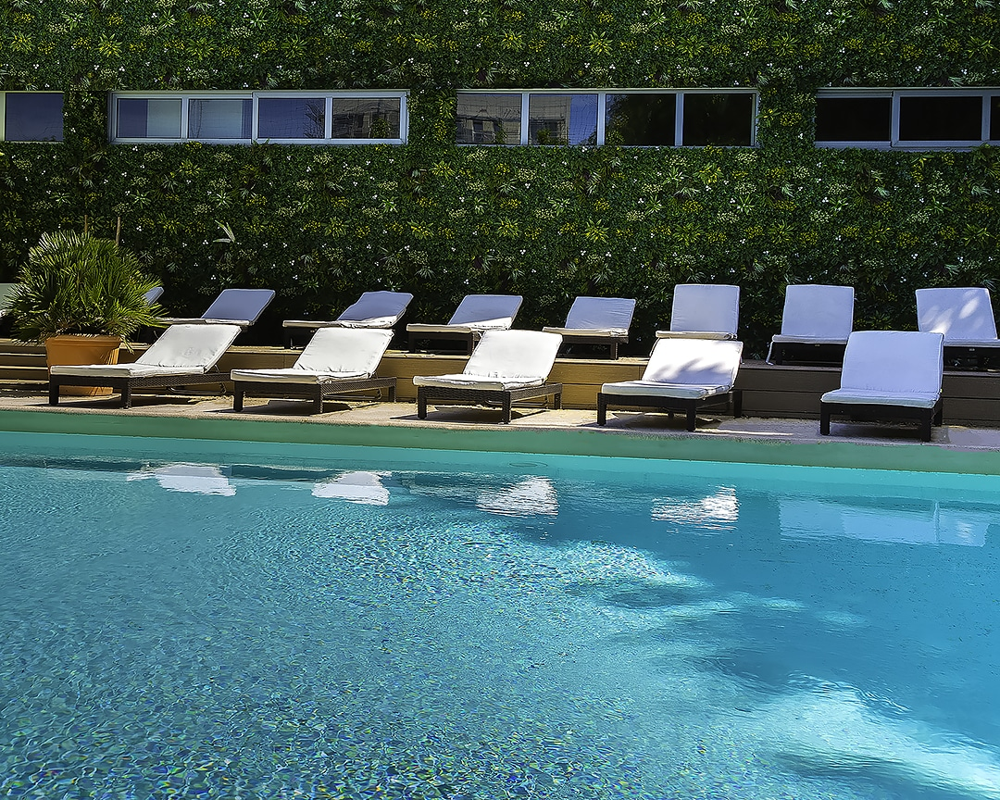
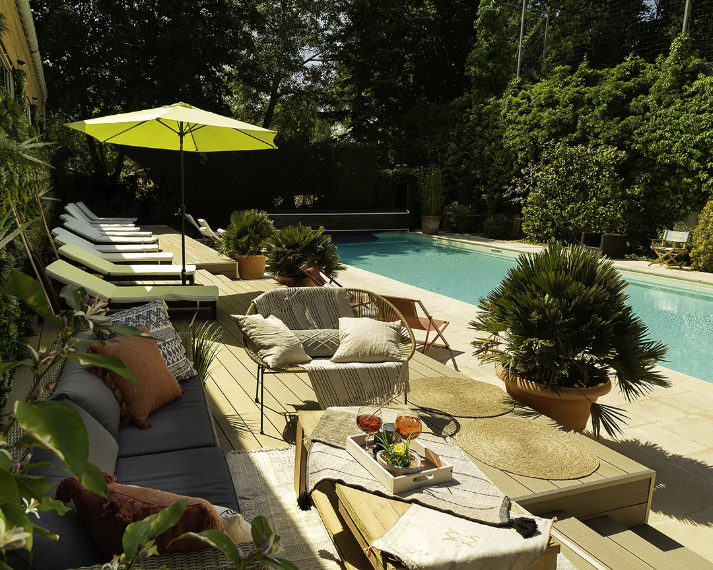
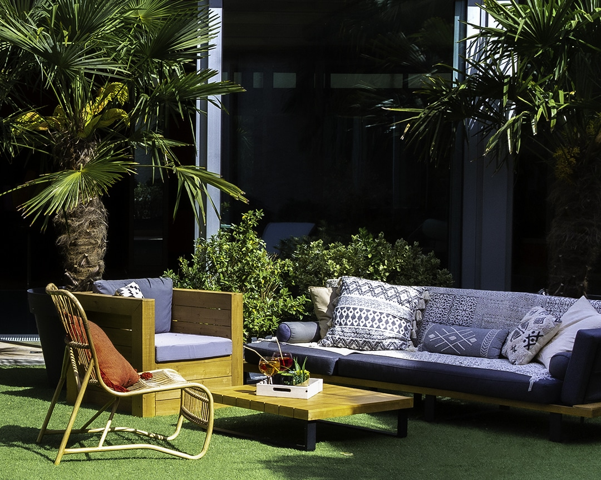
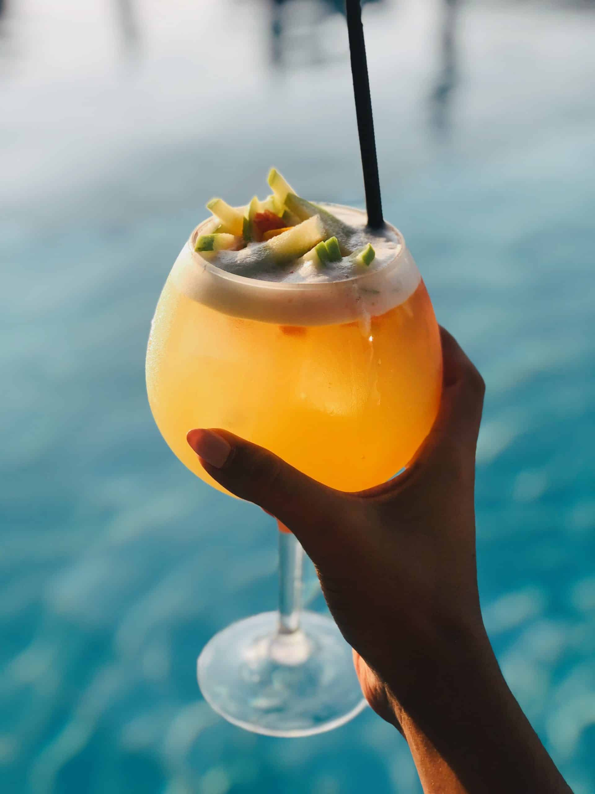
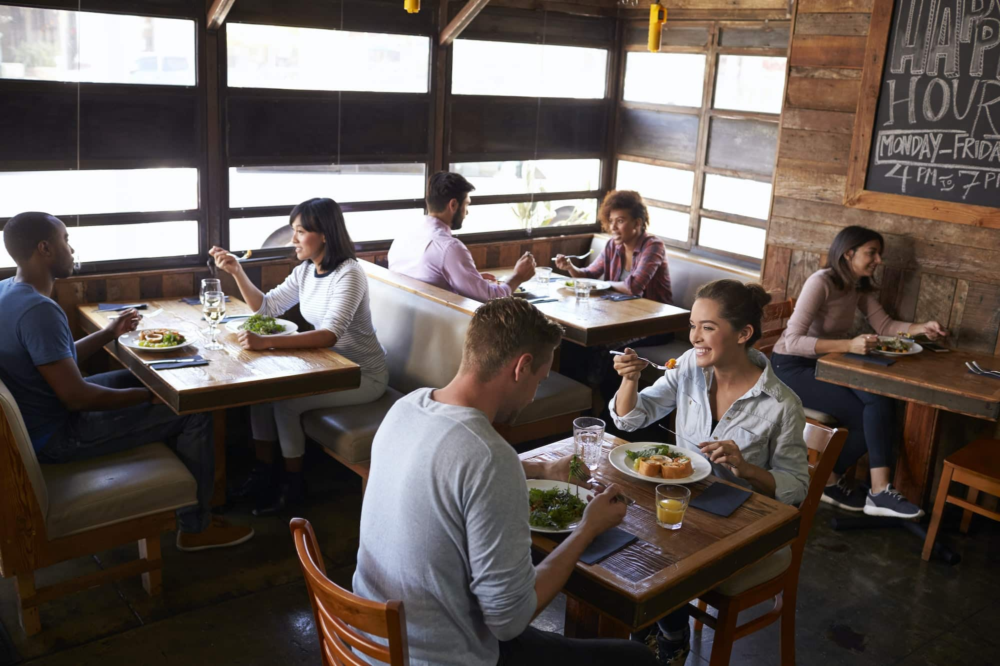
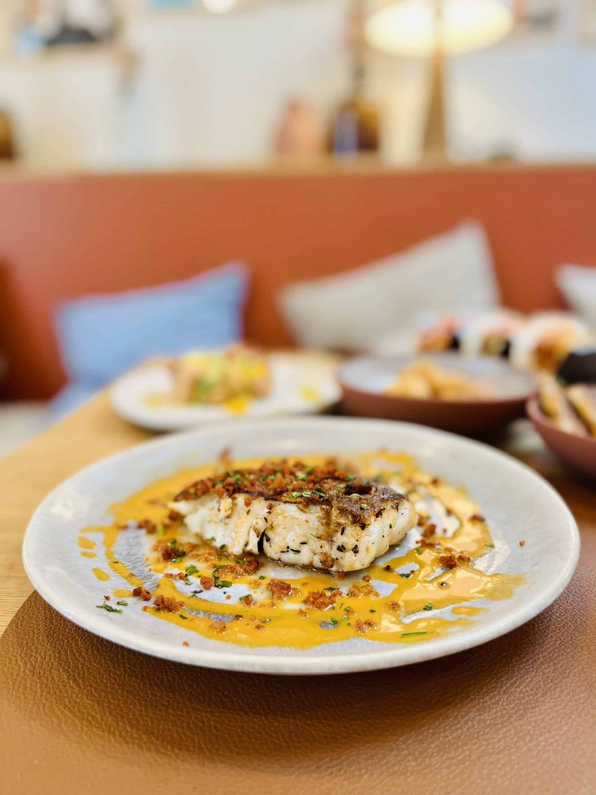
La satisfaction de nos convives est notre plus belle récompense.
"Un cadre magnifique, une cuisine délicieuse et un service aux petits soins. Le Faux Filet Charolais était une merveille. Je recommande vivement pour un déjeuner ou une soirée entre amis !"
"Nous avons privatisé La Piscine pour notre anniversaire de mariage. Tout était parfait : la décoration, le menu personnalisé et l'accueil de l'équipe. Un souvenir inoubliable !"
"Le Tartare de Crevettes et le Velouté de Butternut étaient exceptionnels. Un vrai régal pour les papilles dans un décor inspiré de la Méditerranée. On reviendra sans hésitation !"
Retrouvez-nous au bord de la Seine à Melun. Nous vous accueillons tous les jours dans notre cadre exceptionnel.
| Lundi – Jeudi | 12h00 – 22h30 |
| Vendredi – Samedi | 12h00 – 23h30 |
| Dimanche | 12h00 – 21h00 |
Parking gratuit à proximité. Accessible en bus et RER D (gare de Melun). Terrasse au bord de la Seine.
64 Quai Maréchal Joffre, 77000 Melun
Trouver sur la carte